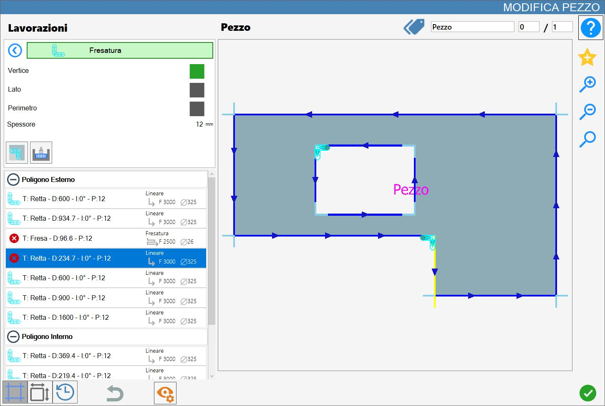
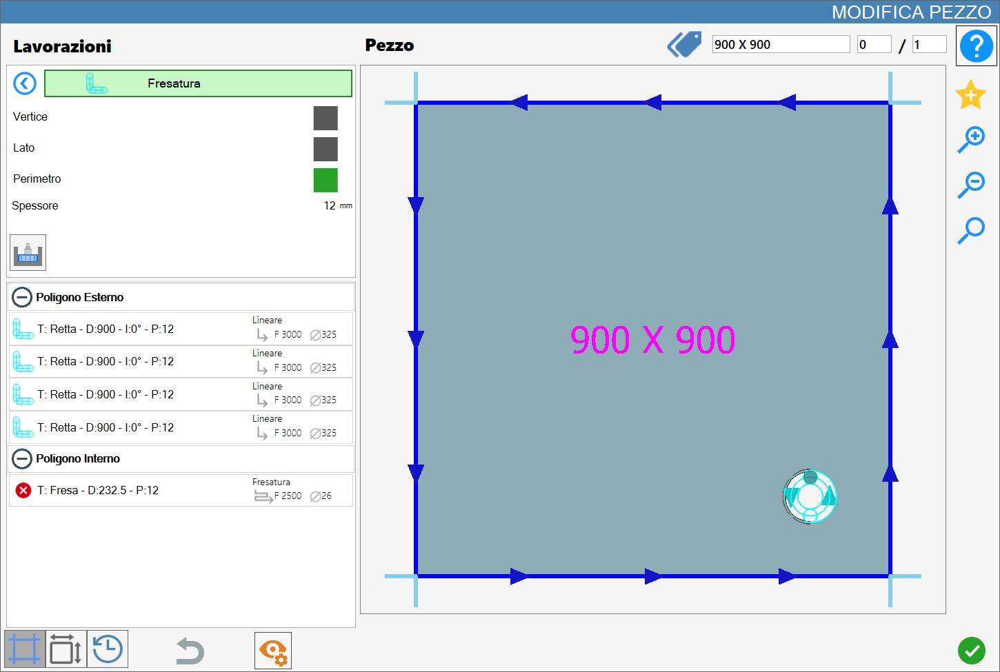

A função ‘Fresagem’ permite criar uma fresagem na peça, no lado, na borda ou em todo o perímetro.
A interface desta função é semelhante à imagem seguinte:

Parâmetros
Vértice | Remove o material que o disco não consegue eliminar sem danificar a peça. Serve apenas para o acabamento de alguns pontos da peça. |
Lado | A ferramenta de fresagem é utilizada para cortar um lado da peça. Não trabalha em conjunto com o corte por disco, mas substitui-o completamente. |
Perímetro | Prevê a utilização da ferramenta de fresagem em vez da ferramenta de disco para executar o corte em todo um polígono da peça. Substitui o disco como no modo Lado. |
Em qualquer modo, a espessura do corte corresponde ao diâmetro da ferramenta de fresagem montada. A alteração deste elemento modifica automaticamente os cortes, atualizando-os com a nova medida.
No modo Vértice, a alteração da espessura do material ou do diâmetro do disco provoca um alongamento ou encurtamento do corte, de modo a adaptá-lo às novas medidas selecionadas.
Se a fresa for demasiado grande para cortar o lado selecionado, será apresentada uma mensagem de erro no ecrã.
Espessura | É apresentada a espessura da chapa atualmente definida no Parametrix, para ajudar o operador a aplicar a maquinação. |
 | Penetração |
 | Fresagem em cantos internos |
Execução da maquinação
É possível aplicar a maquinação premindo o botão à esquerda do corte adequado na lista de polígonos.
Um ícone vermelho com um 'X' indica que a maquinação não pode ser aplicada ao corte pretendido.
As consequências da aplicação de uma fresagem variam consoante o modo selecionado e apresentam algumas diferenças, descritas nos parágrafos seguintes.
A fresagem começa no ponto de entrada indicado na figura, identificável pelo círculo preenchido colorido posicionado na origem.
Cada fresagem aplicada a uma peça é inserida na lista de cortes associada a um polígono e representada graficamente a azul-claro.
No modo Vértice, a fresagem é alinhada com o vértice selecionado.
Nos modos Lado e Perímetro, são substituídos, respetivamente, um ou todos os cortes do polígono.
Execução num vértice
A fresagem é aplicada ao vértice mais próximo do ponto selecionado de um corte na pré-visualização.
A aplicação ocorrerá entre dois cortes consecutivos.
Na imagem de exemplo seguinte são mostradas duas maquinações de fresagem num vértice: a primeira num vértice superior esquerdo do polígono interior; a segunda num vértice do polígono exterior.

Execução num lado
Ao selecionar qualquer ponto de um corte na pré-visualização, a fresagem será aplicada ao longo de todo o lado correspondente.
Na imagem seguinte são mostradas duas maquinações de fresagem num lado: a primeira no lado esquerdo do polígono interior; a segunda num lado inferior do polígono exterior.

Execução no perímetro
Independentemente do ponto ou do corte selecionado, a fresagem será executada ao longo de todo o perímetro do polígono selecionado.
